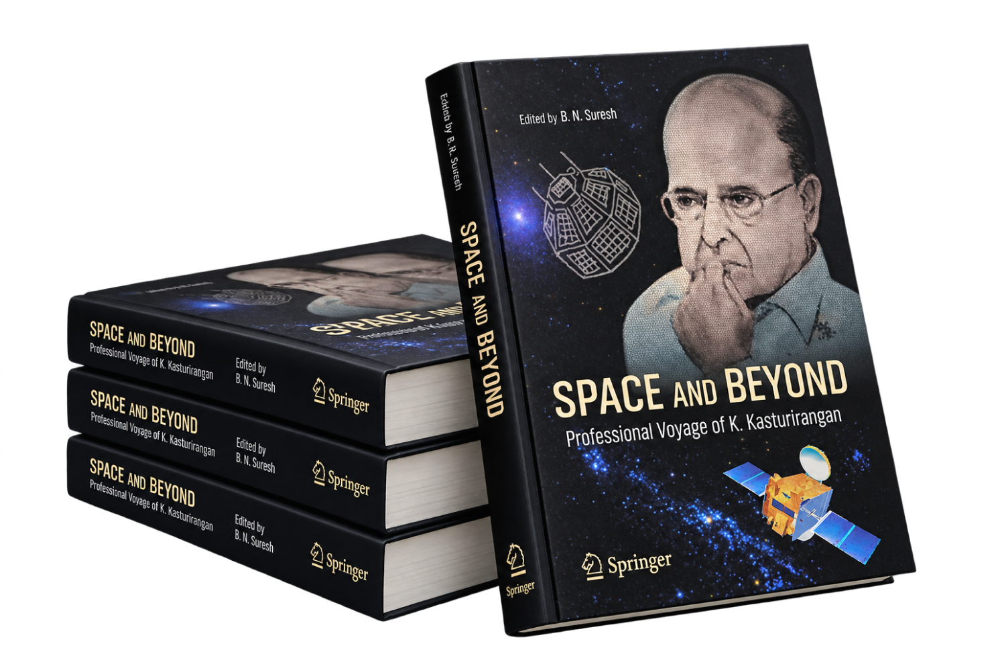

Edited by B.N. Suresh
This book discusses the journey of Dr. K Kasturirangan, who shares his experience during his long tenure at ISRO including the Chairmanship of ISRO, subsequently membership of the Rajya Sabha, the Planning Commission and many other responsibilities.
Over the past five decades of public and professional service to the nation, Dr. Kasturirangan has graduated from a young researcher in astrophysics working under Vikram Sarabhai to leading India’s space program (ISRO), being entrusted by five successive Prime Ministers, besides dealing with several other domains of responsibilities beyond space, all of which have significantly impacted India’s development.
This book centers around select 12 public invited lectures Dr. Kasturirangan delivered ranging from developing hi-tech space systems, to managing an organization as intricate as ISRO which was guided by the wisdom of mentors, including Vikram Sarabhai, M.G.K. Menon, Satish Dhawan and U.R. Rao, to tackling multi-faceted socio-economic issues, including India’s nuclear deal, the report headed by him on the Western Ghats ecosystem, and the new National Education Policy 2020.
Scientists, historians, policy makers, management strategists, journalists, or anyone with a keen interest in understanding the processes behind such large-scale science, technology and socio-economic endeavors – right from planning, creating appropriate institutional mechanisms, working with multiple stakeholders to ensure that these programs deliver tangible benefits to society, articulating these benefits with clarity to political leaders to assure public support – will find this book deeply instructive and illuminating. It will be of interest to the scientific, education and management community as well as to policy makers and researchers affiliated with multifaceted developmental issues.
